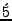
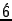
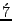
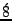

In the above representation, 5 can mean ``Tha Thi Ki Ta Thom'' or
``Tha Ka Tha Ki Ta''. To avoid such an ambiguity, we explicitly use an
accent above the number to represent that it is a Thathakaram, and play
accordingly. This is show in table 4.
Table 4:
Representation of Thathakaram
Representation
Thathakaram

Tha Thi Ki Ta Thom

Tha Thi, Ki Ta Thom

Tha, Thi, Ki Ta Thom

Tha Thi, Ki, Ta, Thom
Tha, Thi, Ki, Ta, Thom
Note that
can be played as ``Tha Thi, Ki, Ta, Thom'' or
``Tha
Thin, Tha Thi Ki Ta Thom'' as per our convenience.
can be played as
``Tha, Thi, Ki, Ta, Thom'' or ``Tha, Thin, Tha Thi
Ki Ta Thom'' and
so on.